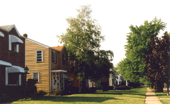
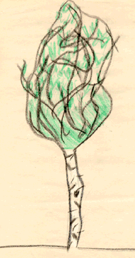

Student Project
Ashley


My tree's common name is Paper Birch. It's tall! It's leaves are small and look like spades. It has white bark.. It has a birdhouse that my grandpa made. Birds eat out of it. So do squirrels!
When I stand by my tree, I feel great! I feel as if I'm in my mom's life. My mom lived in the same house when she was growing up. My tree is about 25 years old.
-
Ashley
c. Ashley
Grade 4
Thomas Jefferson Magnet School
Euclid, Ohio USA
"Paper Birch"
Crayon on Paper 9"X12"
Paper Birch
Latin Name: TBA
Age: 25 years old
Circumference at 54 inches from the base: TBA
Location: Euclid, Ohio USA
 Return to Main Page
Return to Main Page
June Julian jj68@nyu.edu